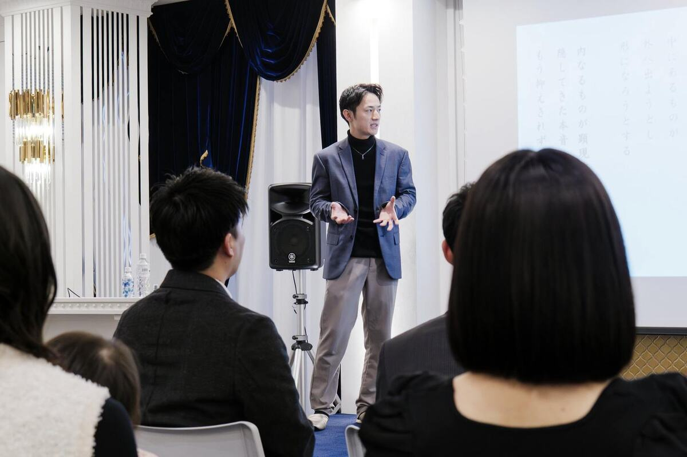

林 竜輔
ロケットをつくっていた私が、
なぜ算命学をしているのか。

三菱重工業の宇宙事業で、H-IIA・H3ロケットのエンジンづくりと、月面探査機SLIMの開発・製造に携わっていました。
変わったのは、友人との別れがきっかけです。「人は、どうすれば自分らしく生きられるんだろう」。その問いが、頭から離れなくなりました。
答えを探すなかで、算命学に出会いました。学んで、実際に人と向き合って鑑定を重ねるうちに、人にはそれぞれ生まれ持った違いがあって、それを知ると自分の選択を見直せることが分かってきました。
だから私は、算命学を「当てるもの」だとは考えていません。自分を知って、自分の人生を自分で選ぶためのものだと思っています。
KAGAMIをやっているのは、そのためです。
- 1,000名以上これまでに鑑定した方の数
（経営者・個人事業主・管理職など） - 雑誌『anan』に掲載
（2025年12月）